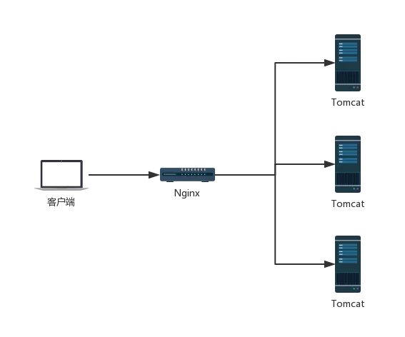
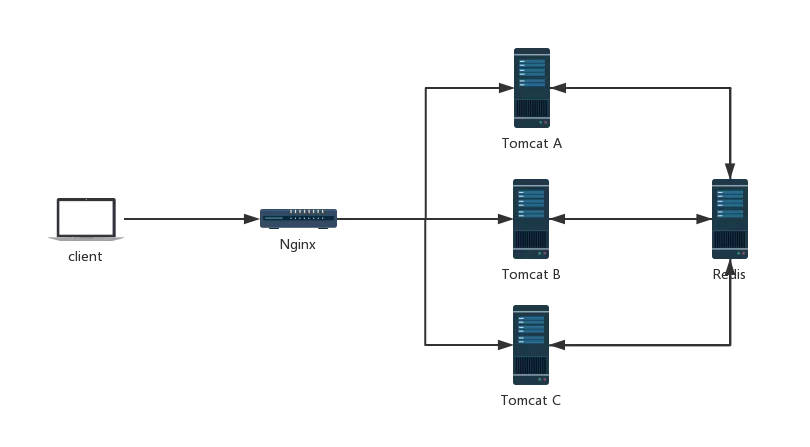
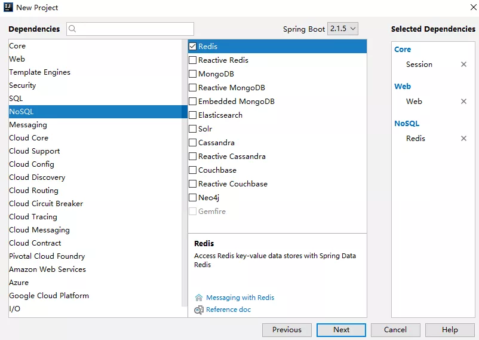
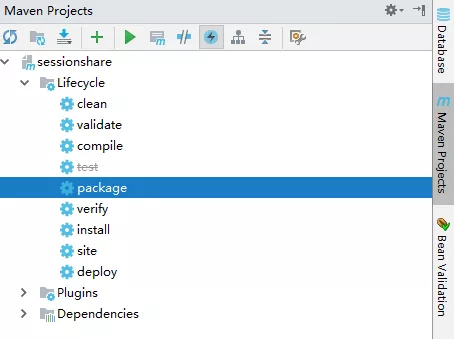
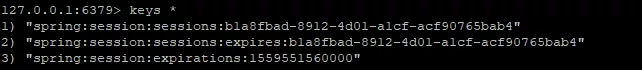
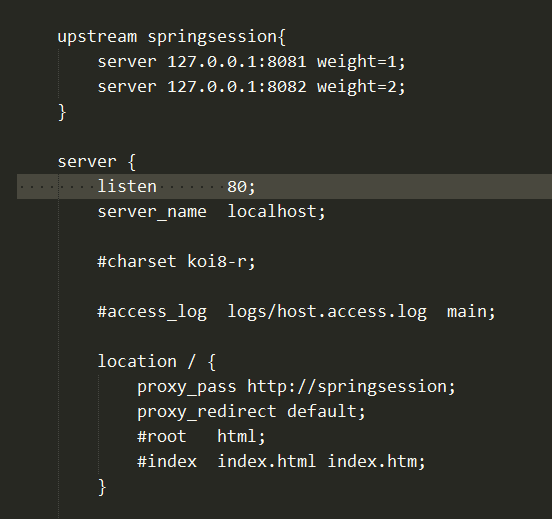

在传统的单服务架构中，一般来说，只有一个服务器，那么不存在 Session 共享问题，但是在分布式/集群项目中，Session 共享则是一个必须面对的问题，先看一个简单的架构图：

在这样的架构中，会出现一些单服务中不存在的问题，例如客户端发起一个请求，这个请求到达 Nginx 上之后，被 Nginx 转发到 Tomcat A 上，然后在 Tomcat A 上往 session 中保存了一份数据，下次又来一个请求，这个请求被转发到 Tomcat B 上，此时再去 Session 中获取数据，发现没有之前的数据。对于这一类问题的解决，思路很简单，就是将各个服务之间需要共享的数据，保存到一个公共的地方（主流方案就是 Redis）：

当所有 Tomcat 需要往 Session 中写数据时，都往 Redis 中写，当所有 Tomcat 需要读数据时，都从 Redis 中读。这样，不同的服务就可以使用相同的 Session 数据了。
这样的方案，可以由开发者手动实现，即手动往 Redis 中存储数据，手动从 Redis 中读取数据，相当于使用一些 Redis 客户端工具来实现这样的功能，毫无疑问，手动实现工作量还是蛮大的。
一个简化的方案就是使用 Spring Session 来实现这一功能，Spring Session 就是使用 Spring 中的代理过滤器，将所有的 Session 操作拦截下来，自动的将数据 同步到 Redis 中，或者自动的从 Redis 中读取数据。
对于开发者来说，所有关于 Session 同步的操作都是透明的，开发者使用 Spring Session，一旦配置完成后，具体的用法就像使用一个普通的 Session 一样。
案例
创建工程
首先 创建一个 Spring Boot 工程，引入 Web、Spring Session 、Spring Security 以及 Redis：

创建成功之后，pom.xml 文件如下：
1 | <dependency> |
注意：
这里我使用的 Spring Boot 版本是 2.1.4 以上的版本 ，这里 Spring Security 依赖不受影响操作，仅仅只是多了一个依赖，当然也多了 Spring Security 的一些默认认证流程。
在 application.yml 配置 Redis
1 | # Redis |
这里的 Redis ，我虽然配置了四行，但是考虑到端口默认就是 6379 ，database 默认就是 0，所以真正要配置的，其实就是两行。
编写 SpringSessionDemoController
1 |
|
考虑到一会 Spring Boot 将以集群的方式启动 ，为了获取每一个请求到底是哪一个 Spring Boot 提供的服务，需要在每次请求时返回当前服务的端口号，因此这里我注入了 server.port 。
接下来 ，项目打包：

打包之后，启动项目的两个实例：
1 | java -jar spring-session-0.0.1-SNAPSHOT.jar --server.port-8081 |
然后先访问 localhost:8081/set 向 8081 这个服务的 Session 中保存一个变量，访问完成后，数据就已经自动同步到 Redis 中了：

然后，再调用 localhost:8082/get 接口，就可以获取到 8082 服务的 session 中的数据：
1 | Vincent:8082 |
此时关于 session 共享的配置就已经全部完成了，session 共享的效果我们已经看到了，但是每次访问都是我自己手动切换服务实例，因此，接下来我们来引入 Nginx ，实现服务实例自动切换。
引入 Nginx
很简单，进入 Nginx 的安装目录的 conf 目录下（默认是在 /usr/local/nginx/conf），编辑 nginx.conf 文件:

在这段配置中：
upstream表示配置上游服务器springsession表示服务器集群的名字，这个可以随意取名字upstream里边配置的是一个个的单独服务weight表示服务的权重，意味者将有多少比例的请求从Nginx上转发到该服务上location中的proxy_pass表示请求转发的地址，/表示拦截到所有的请求，转发转发到刚刚配置好的服务集群中proxy_redirect表示设置当发生重定向请求时，Nginx自动修正响应头数据（默认是Tomcat返回重定向，此时重定向的地址是Tomcat的地址，我们需要将之修改使之成为Nginx的地址）。
配置完成后，将本地的 Spring Boot 打包好的 jar 上传到 Linux ，然后在 Linux 上分别启动两个 Spring Boot 实例：
1 | nohup java -jar spring-session-0.0.1-SNAPSHOT.jar --server.port=8081 & |
其中
nohup表示当终端关闭时，Spring Boot不要停止运行&表示让Spring Boot在后台启动
配置完成后，重启 Nginx：
1 | /usr/local/nginx/sbin/nginx -s reload |
Nginx 启动成功后，我们首先手动清除 Redis 上的数据，然后访问 192.168.66.128/set 表示向 session 中保存数据，这个请求首先会到达 Nginx 上，再由 Nginx 转发给某一个 Spring Boot 实例：
1 | 8081 |
如上，表示端口为 8081 的 Spring Boot 处理了这个 /set 请求，再访问 /get 请求：
1 | Vincent:8082 |
可以看到， /get 请求是被端口为 8082 的服务所处理的。
总结
本文主要向大家介绍了 Spring Session 的使用，另外也涉及到一些 Nginx 的使用 ，虽然本文较长，但是实际上 Spring Session 的配置没啥。
我们写了一些代码，也做了一些配置，但是全都和 Spring Session 无关，配置是配置 Redis，代码就是普通的 HttpSession，和 Spring Session 没有任何关系！
唯一和 Spring Session 相关的，可能就是我在一开始引入了 Spring Session 的依赖吧！
如果大家没有在 SSM 架构中用过 Spring Session ，可能不太好理解我们在 Spring Boot 中使用 Spring Session 有多么方便，因为在 SSM 架构中，Spring Session 的使用要配置三个地方 ，一个是 web.xml 配置代理过滤器，然后在 Spring 容器中配置 Redis，最后再配置 Spring Session，步骤还是有些繁琐的，而 Spring Boot 中直接帮我们省去了这些繁琐的步骤！不用再去配置 Spring Session。
本文相关案例我已经上传到 GitHub ，大家可以自行下载：https://github.com/V-Vincen/spring-session.git
参考：https://mp.weixin.qq.com/s/Ty5Elqel34P3tHv5IT2ARg
If you like this blog or find it useful for you, you are welcome to comment on it. You are also welcome to share this blog, so that more people can participate in it. If the images used in the blog infringe your copyright, please contact the author to delete them. Thank you !